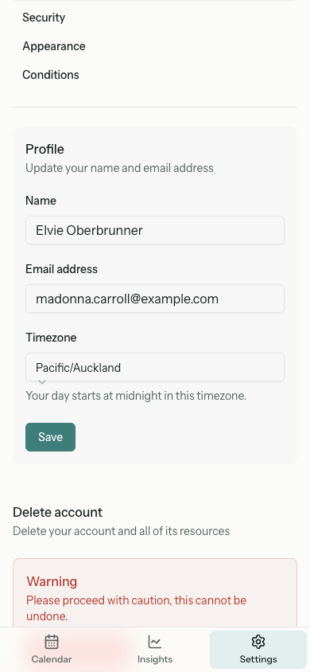

The backdrop-filter was applied and the background was semi-transparent, but at 88% opacity with no saturation boost the effect was invisible — the bar read as a solid strip. Lowered alpha to 0.86 and added saturate(180%) so content visibly moves under the bar rather than disappearing at its edge.

backdrop-filter was applied correctly (confirmed via computed styles) and content did scroll behind the bar (the document scrolls, the bar is position: fixed). But at 88% opacity with the glass surface (#fbfbfa) identical to the page background (#fbfbfa), the 12% transparency was imperceptible — blurred content at 12% intensity on a matching base reads as nothing.saturate(180%) to the backdrop-filter, the standard iOS/macOS glass technique that boosts chroma in whatever scrolls behind the bar. Lowered alpha from 0.88 to 0.86 for marginally more transparency. Both schemes still clear WCAG AA for muted ink on the worst-case composite (light 4.63:1, dark 4.62:1; threshold 4.5).